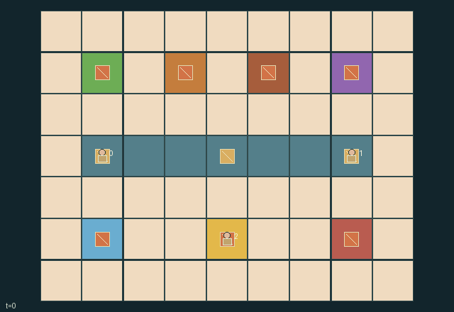

GI195 · Clockwork Banquet

Original recording scope: Role 0 actual visible view · Mode: Actual diagnostic replay
Additional generated state replay (different trajectory / full-state debug)

Serve four banquet courses in order vegetable, protein, vegetable, protein using three reusable trays and three ingredients of each type.
Identity and original contract
3 independently actionable roles; 11 discrete commands per role; 150 native observation columns per role; original horizon 160 steps. Declared per-step reward range: -2 to 4. Observation regime: fully_observable.
Source SHA-256: 7ee81895c600922a68ea58c3fea8a5e3bd770dff4e06a25bd7c5f0d04fd6bebe
The objective, rewards, population, map and horizon remain original. A preview is not a success claim.
Objective and gameplay
Serve four banquet courses in order vegetable, protein, vegetable, protein using three reusable trays and three ingredients of each type.
Changing shared conveyor direction reallocates physical trays and ingredients between cooks, while cooking freshness, tray reuse and a single serving order couple their schedules.
- Three trays are conserved. Carry one tray, or put it down on a cell without another loose tray.
- Load a clean tray at the matching pantry. Vegetable and protein each have three ingredients.
- Start the raw portion at its matching stove. The tray stays there during three cooking ticks.
- Ready food spoils after twelve age ticks. Serving happens before that tick's ageing.
- The hatch asks for vegetable, protein, vegetable, protein, in that order.
- Serving leaves a dirty tray. Carry dirty or spoiled trays to the sink to wash them.
- Loose trays on row y=3 move one cell on even ticks. Endpoints and occupied tray cells stop movement.
- A cook at (4,5) reverses the whole belt, helping one delivery route while delaying another.
Ending: Success when course reaches four. Failure when the next required type has no pantry stock and no raw/cooking/ready portion left on any tray; spoiled portions cannot be recovered.
What this game explores
Resource commons & externalities: An action changes a persistent resource or burden that another role also encounters. Compare extraction with maintenance and record the downstream resource trajectory.
Complementary production & service: A useful outcome requires ordered stages, scarce equipment or another role's capability. Measure real completed products and resource circulation rather than counting intermediate actions as success.
Joint transport & shared access: Positions, load geometry, occupancy and persistent access constrain whose action can succeed next. Distinguish physical handoff, shared controls and simultaneous force from a cosmetic cooperation label.
These are questions supported by rule structure, not observed learning effects.
Play it: operating walkthrough
crucibles play --game gi195Keep Python running and open its printed address. Select this game, set a seed and press Create session. The game itself is always English.
Assign a role range to Host with Assign / take over, or Assign all roles. Invite a second participant with Create player invitation, then assign a disjoint subset. Every original role is available.
For every owned role choose a legal command and press Queue. Arrow keys / WASD queue a declared directional action for the current role camera when available. Space or Advance one joint step advances everyone together. Non-directional games use the selectors.
Unqueued roles use the labelled untrained uniform-legal policy. Take over or release roles before the next step without resetting. Full-state debug is privileged and permanently logged; role cameras preserve permissions. Close the session to retain logs. Server restart does not restore sessions.
Complete command reference
IDs and English labels exactly match the manifest. Availability depends on role, resources, location and phase. An available action can still have no productive effect.
0·Wait
1·North
2·East
3·South
4·West
5·Take a non-cooking tray here, or put held tray on a free floor cell
6·Load clean held tray at a stocked pantry
7·Start matching raw course at its stove, leaving the tray there
8·Reverse conveyor at control (4,5)
9·Wash held dirty/spoiled tray at sink (1,5)
10·Serve the requested ready held course at hatch (7,1)
Roles and capability identifiers
These original role names describe capabilities, not interchangeable skins. Check each owned role's legal selector before planning handoffs.
agent_0·Left prep cook
agent_1·Right prep cook
agent_2·Conveyor and service cook
Information and observation permissions
Fully observable. A role one-hot precedes the complete public obs_keys vector: map, all cooks, all tray positions/holders/food/stages/ages, station locations, pantry counts, conveyor direction, next course index, served/waste accounting and per-step events. All entities are visible to all roles. Labels and native state provide the same information to human and policy users.
The GIF is full-state debug and may reveal hidden entities or private state. Train on obs[agent], not the picture, state tree or another role's private row. Field slices and visibility are in the original manifest.
Reinforcement-learning integration
import jax
from crucibles_jaxmarl import make
env = make("gi195")
key = jax.random.PRNGKey(0)
key, rk, ak, sk = jax.random.split(key, 4)
obs, state = jax.jit(env.reset)(rk)
actions = env.sample_actions(ak, state)
obs, state, rewards, dones, info = jax.jit(env.step_env)(sk, state, actions)
done = dones["__all__"]Observations are float32 vectors of width 150; actions are scalar int32; masks have 11 entries. Supply all 3 roles each transition. Masked sampling is an engineering reference, not a trained learner.
step_env retains terminal data without reset. step performs outer autoreset and keeps terminal data in info["raw_state"] and info["raw_observation"]. Use dones["__all__"] for episode boundaries; separate completion, failure and time limit in analysis.
JIT or vmap equal identities and shapes. Split independent reset, policy and transition keys. Group different shapes explicitly; do not shrink the population or horizon. Host rendering stays outside training.
Training questions and fair evaluation
Define valid completion from the objective before fitting. Preserve original rewards and also report real deliveries/services, losses, resource state, unresolved episodes and per-role returns. Animation is not a reward signal.
An action changes a persistent resource or burden that another role also encounters. Compare extraction with maintenance and record the downstream resource trajectory.
A useful outcome requires ordered stages, scarce equipment or another role's capability. Measure real completed products and resource circulation rather than counting intermediate actions as success.
Positions, load geometry, occupancy and persistent access constrain whose action can succeed next. Distinguish physical handoff, shared controls and simultaneous force from a cosmetic cooperation label.
Compare memory, communication or centralized critics under matched actor information. Declare critic access; keep actor inputs role-filtered. Match partner/opponent distributions, masks, compute and checkpoint selection. Final tests never enter fitting or selection.
Independent training runs or source-pairing blocks are inferential units; episodes from one policy are not independent training replications. Save hashes, keys, versions, device, time and cost. Negative, zero, failed and indeterminate outcomes are valid. No trained checkpoint or target score is supplied.
Classification and evidence
Overlapping editorial labels are reading aids, not proof of novelty, difficulty, strategic equivalence or learning effects.
- Resource commons & externalities
- Evidence
manifest.task.objective: Serve four banquet courses in order vegetable, protein, vegetable, protein using three reusable trays and three ingredients of each type.
- Complementary production & service
- Evidence
manifest.task.objective: Serve four banquet courses in order vegetable, protein, vegetable, protein using three reusable trays and three ingredients of each type.
- Evidence
manifest.task.interaction: Changing shared conveyor direction reallocates physical trays and ingredients between cooks, while cooking freshness, tray reuse and a single serving order couple their schedules.
- Evidence
manifest.task.observation_access: Fully observable. A role one-hot precedes the complete public obs_keys vector: map, all cooks, all tray positions/holders/food/stages/ages, station locations, pantry counts, conveyor direction, next course index, served/waste accounting and per-step events. All entities are visible to all roles. Labels and native state provide the same information to human and policy users.
- Joint transport & shared access
- Evidence
scene.rules.0: Three trays are conserved. Carry one tray, or put it down on a cell without another loose tray.
- Evidence
scene.rules.5: Serving leaves a dirty tray. Carry dirty or spoiled trays to the sink to wash them.
- Evidence
scene.rules.7: A cook at (4,5) reverses the whole belt, helping one delivery route while delaying another.
Source, receipts and preview limits
The additional generated state GIF replays saved untrained legal actions through the original kernel. At most 25 actual endpoints include initial and terminal state; no invented interpolation. It is full-state debug, not the role observation. Where an original scene preview exists, it is displayed first with its own recorded information scope. The two recordings may use different trajectories and views.
Original source, observation slices, manifest and mechanism
Native receipt · Presentation receipt
Engineering passes do not establish learning. Nonzero floating differences remain recorded and undetermined; no new tolerance was introduced. Human scores remain unverified.